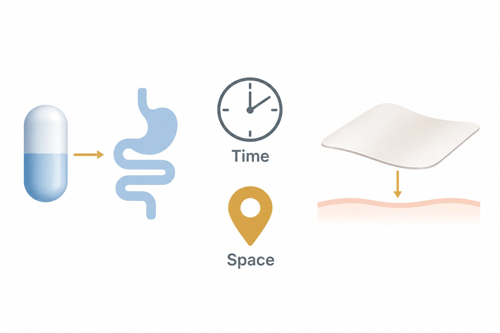

연구 배경과 분류
전자약의 표적 기능과 이식 부작용이 초록에 명시되나 넓은 리뷰여서 주제 우선순위는 잠정적이다.
경계 분류: 탐색을 위해 가장 가까운 주제를 배정했습니다. 분류 근거와 교차 연관을 함께 읽어야 하며, 주 테마만으로 연구 범위를 한정할 수 없습니다. 기초 연구의 분류는 직접적인 바이오전자 응용을 입증하지 않습니다.
연구 배경
전자약은 섭취·패치형, 생체흡수형, 장기 이식형으로 나뉩니다. 위치와 작동 기간이 중요합니다.
핵심 접근과 발전
종설은 섬유 가열식 방출과 항오염·유연 감지 구조를 소개합니다. 이 설계 설명을 치료효능 검증으로 해석하지 않습니다.

AI 생성 개념도·초록 범위. 전자약 종설의 공간·시간 관점과 섭취형·패치형 장치 예시를 표현했습니다. 장치 모양·화살표·시계는 주제 기호이며 실제 내부 구조, 통신 방식, 감지·치료 기전 또는 투약 일정·임상 효과를 나타내지 않습니다.
읽은 초록의 주제와 장치 유형만 설명하는 개념도로 승인합니다. 본문을 읽은 것으로 승격하지 않으며 구체적 치료·통신·제어·임상 효능의 주장은 계속 제외합니다.
논문 원그림을 복제한 이미지가 아니며, 원그림 재사용 허가를 의미하지 않습니다.
공개 초록에서 확인한 개념으로 웹 ChatGPT에서 생성하고 초록 범위에서 독립 검토했습니다. 논문 본문·보충자료를 검증했다는 뜻이 아닙니다. 표시용 WebP 인코딩 외에 자르기나 내용 편집을 하지 않았습니다.
평가 방법과 조건
전극의 분해 시험은 pH 10 PBS·37°C·두 달 조건입니다. 쥐 기록을 인체 수명으로 환산하지 않습니다.
주요 결과
돼지 위 장치는 최대 14일 양방향 통신과 20.1일 체류를 보고했습니다. 이후 온도 전송은 단방향이었습니다.
한계와 남은 질문
부산물·흉터·체액 중 안정성과 임상 검증은 남아 있습니다. 원저 본문과 SI는 직접 검토하지 않았습니다.
관련 외부 연구
Wirelessly operated bioelectronic sutures for the monitoring of deep surgical wounds
DOI: 10.1038/s41551-021-00802-0 ↗
외부 초록은 실제 돼지에서 무전지 봉합사 감시를 시연한다. 리뷰의 공간적 접근성을 점검할 구체적 감지 사례다.
감시 사례를 약물 전달·치료 효능으로 읽지 않는다.
초록 확인교신저자 확인
서정목 교신 확인아래는 서정목의 교신저자 여부에 관한 확인 기록입니다. 저자 순서나 별표만으로 판정하지 않으며, 본문 내용 검증과 별도로 읽어야 합니다.
- 교신 고지 확인 출처 ↗
Corresponding Author — Jungmok Seo; Corresponding Author — Taeyoon Lee
author details for Jungmok Seo and Taeyoon Lee · publisher_author_detail_read
- 본문 확인 범위
- 이전 검토 단계에서 실제 확보한 저자기관 공개 PDF를 직접 읽었습니다. DOI·제목·서지·25쪽 표기를 대조한 게재본입니다. 본문/표/캡션을 읽은 페이지는 1–4, 6, 8–9, 14, 16, 18, 20–21쪽이며, 10·12·15쪽은 절 제목 위치만 확인했습니다. 참고문헌 22–25쪽은 지정 인용 항목을 식별하기 위해 확인했습니다. 본문 전부·그림 패널·인용 원저 전수를 읽었다는 뜻은 아닙니다. 이 리뷰의 별도 SI를 확보하거나 읽지 않았습니다. 현재 PDF 텍스트에서 Supporting Information/Supplementary 표기를 찾지 못했지만 SI 부재의 증명으로 해석하지 않습니다. 인용된 장치 원저의 SI도 읽지 않았습니다.
- 보충자료 확인 범위
- 이 리뷰의 별도 SI를 확보하거나 읽지 않았습니다. 현재 PDF 텍스트에서 Supporting Information/Supplementary 표기를 찾지 못했지만 SI 부재의 증명으로 해석하지 않습니다. 인용된 장치 원저의 SI도 읽지 않았습니다.
- 남은 확인
- 정정문과 공개 초록·캡션을 확인했습니다. 수정 패널·원저 전체·SI·반복 실험 원자료는 미검토입니다. 저자의 결론 불변 진술을 효능 검증으로 취급하지 않으며, 나머지 원저의 표본 수·용량·통계와 장기·임상 근거도 검증하지 않았습니다.
COVERAGE & OUTREACH
보도와 소개
논문과의 연관성을 확인한 소개 자료입니다. 언론 게재는 독립 취재나 실험 결과의 추가 검증을 뜻하지 않습니다.
이번 검색 범위에서 본문 대조를 마친 관련 소개 링크를 찾지 못했습니다. 관련 자료가 없다는 뜻은 아닙니다.
101편의 채널별 조사 범위와 검색 기록 →근거와 확인 범위
이전 검토 단계에서 실제 확보한 저자기관 공개 PDF를 직접 읽었습니다. DOI·제목·서지·25쪽 표기를 대조한 게재본입니다. 본문/표/캡션을 읽은 페이지는 1–4, 6, 8–9, 14, 16, 18, 20–21쪽이며, 10·12·15쪽은 절 제목 위치만 확인했습니다. 참고문헌 22–25쪽은 지정 인용 항목을 식별하기 위해 확인했습니다. 본문 전부·그림 패널·인용 원저 전수를 읽었다는 뜻은 아닙니다. 이 리뷰의 별도 SI를 확보하거나 읽지 않았습니다. 현재 PDF 텍스트에서 Supporting Information/Supplementary 표기를 찾지 못했지만 SI 부재의 증명으로 해석하지 않습니다. 인용된 장치 원저의 SI도 읽지 않았습니다.
추가 해설은 아래에 명시한 근거 범위에서 편집 검토를 승인한 내용입니다. 모든 본문·보충자료의 검증 완료를 뜻하지 않습니다.
- 추가 본문 확인 범위
- 이전 검토 단계에서 실제 확보한 저자기관 공개 PDF를 직접 읽었습니다. DOI·제목·서지·25쪽 표기를 대조한 게재본입니다. 본문/표/캡션을 읽은 페이지는 1–4, 6, 8–9, 14, 16, 18, 20–21쪽이며, 10·12·15쪽은 절 제목 위치만 확인했습니다. 참고문헌 22–25쪽은 지정 인용 항목을 식별하기 위해 확인했습니다. 본문 전부·그림 패널·인용 원저 전수를 읽었다는 뜻은 아닙니다.
- 추가 보충자료 확인 범위
- 이 리뷰의 별도 SI를 확보하거나 읽지 않았습니다. 현재 PDF 텍스트에서 Supporting Information/Supplementary 표기를 찾지 못했지만 SI 부재의 증명으로 해석하지 않습니다. 인용된 장치 원저의 SI도 읽지 않았습니다.
- 원본 공개 논문 목록 ↗ · #58 · 2026-10-03
- Crossref metadata ↗: 이 Crossref 항목은 공개 서지 메타데이터 대조 기록입니다. 초록·본문·보충자료의 실제 열람 범위는 이 페이지의 별도 근거 기록에 명시하며, 서지 대조만으로 전문 열람이나 본문·보충자료 전체 검증 완료를 판정하지 않습니다. license_urls는 등록된 링크 목록이며 본문·그림 재배포 허가를 의미하지 않습니다. TDM 또는 게시 정책 링크가 포함될 수 있습니다.
- Electronic Drugs: Spatial and Temporal Medical Treatment of Human Diseases ↗
public_web_abstract · Initial abstract/metadata-only check on 2026-10-03; main review text was not read in that initial check. Later selected main-text reading is documented separately in the current review scope. - Electronic Drugs: Spatial and Temporal Medical Treatment of Human Diseases ↗
public_institutional_selected_main_text_read · 2026-10-06; see the section-specific review locations below. PDF p.3, §1 final paragraph; PDF p.2, Fig.1 caption and explanatory paragraphs - 추가 해설의 근거 ↗
연구 배경 · PDF p.3, §1 final paragraph; PDF p.2, Fig.1 caption and explanatory paragraphs · public_institutional_selected_main_text_read - 추가 해설의 근거 ↗
핵심 접근과 발전 · PDF p.8, §2.2, Mostafalu textile-dressing paragraph [15]; PDF p.16, §4.2, coating and flexible-mesh paragraphs [138,142]; PDF p.16, §4.2, right column, Xie et al. CGM coating [138]; bibliography p.24 · public_institutional_selected_main_text_read - 추가 해설의 근거 ↗
평가 방법과 조건 · PDF p.14, §3.3 continuation, left column first paragraph; cited Yu et al. [79]. Context: Table 1 p.4; Tables 2–3 p.9.; PDF p.6, §2.1 continuation, left column, 3D-printed gastric-resident device [42] · public_institutional_selected_main_text_read - 추가 해설의 근거 ↗
주요 결과 · PDF p.6, §2.1 continuation, left column, 3D-printed gastric-resident device [42] · public_institutional_selected_main_text_read - 추가 해설의 근거 ↗
한계와 남은 질문 · PDF p.21, §5 Conclusions and Perspectives, right column final discussion paragraph before Acknowledgements · public_institutional_selected_main_text_read - 추가 해설의 근거 ↗
관련 연구와의 연결 · PDF p.8, §2.2, right column first paragraph, textile dressing [15]; reference entry p.22; PDF p.3, §2.1, right column last paragraph; reference [31] p.22; PDF p.6, §2.1 continuation, left column first paragraph [12]; bibliography p.22 · public_institutional_selected_main_text_read - Novel orally swallowable IntelliCap(®) device to quantify regional drug absorption in human GI tract using diltiazem as model drug ↗
관련 연구와의 연결 · PubMed title, Authors, citation line and DOI/PMID/PMCID identifiers · official_bibliographic_metadata_only_no_original_full_text - Oxycodone Ingestion Patterns in Acute Fracture Pain With Digital Pills ↗
관련 연구와의 연결 · PubMed title, Authors, citation line and DOI/PMID/PMCID identifiers · official_bibliographic_metadata_only_no_original_full_text - A Textile Dressing for Temporal and Dosage Controlled Drug Delivery ↗
관련 연구와의 연결 · Publisher title, volume/issue/article-number header, DOI and How to cite; author details list · official_bibliographic_metadata_only_no_original_full_text - A Textile Dressing for Temporal and Dosage Controlled Drug Delivery — DOI 10.1002/adfm.201702399 ↗
핵심 접근과 발전 · Public Abstract, second paragraph: composite fiber heater, thermoresponsive carriers and individually addressable release; original full text not read. · public_original_abstract_read_no_original_full_text_or_SI - Correction to A Textile Dressing for Temporal and Dosage Controlled Drug Delivery — DOI 10.1002/adfm.202512170 ↗
관련 연구와의 연결 · Correction notice first and second paragraphs immediately before Figure6; corrected Figure6A caption. Named Control-Cefazolin T=0/T=16h overlap, unavailable raw data, repeated experiment, replacement image and authors unchanged-conclusion statement. · publisher_correction_notice_and_caption_read_no_corrected_panel_raw_data_or_SI_audit